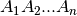
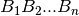
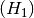
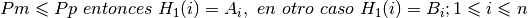
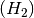
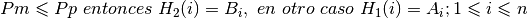

UniformCrossover (script)¶
Se lleva a cabo la implementación de la técnica conocida como Uniform Crossover
(ó Cruza Uniforme).
Primero que nada esta operación está fabricada para usarse tanto con la Representación
Cromosómica (véase Model/ChromosomalRepresentation)
de tipo FloatPoint (ó Punto Flotante) como Binary (ó Binaria).
La característica de este procedimiento es crear nuevos Individuos intercambiando
secuencialmente los genes de sus padres; visto de una manera más estructurada consiste en lo siguiente:
- Tenemos a los cromosomas de los padres Padre A: 
y Padre B: 
- Ahora, cada hijo será construido con genes de uno y sólo uno de los padres a menos que se indique lo contrario; este movimiento será posible con una variable denominada Pmask (Pm) que toma valores de 0 a 1 y una probabilidad de Pmask (Pp) que también toma valores de 0 a 1. Entonces lo anterior se puede declarar así:
- Para el hijo  que tomará sus genes del padre A (PA):
Si 
- Para el hijo  que tomará sus genes del padre B (PB):
Si 
-
execute_crossover_technique(chromosome_a, chromosome_b, crossover_parameters)¶ Tomando en cuenta la información proporcionada con anterioridad, se implementa el método conocido como Uniform Crossover (ó Cruza Uniforme).